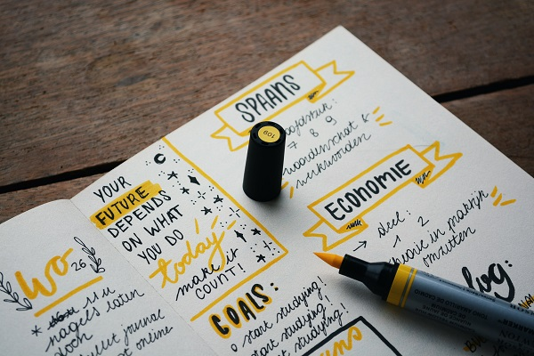

Discovering my way.
I finished high school in 2020 and took the High School National Exam (ENEM) in 2021 with a performance of 980/1000 in the essay. In January/2021 I entered the job market as an Administrative Apprentice in the Finance department of a multinational company working in financial purchase and sale processes, documentation, customer service within identifying and solving problems. In addition, as an apprentice, the company SESCOOP taught modules of the Administrative Assistant program with a focus on professional posture, financial management and MS Office. I recently began my studies in the field of Technology at Brigham Young University. Learning more every day, I am interested in working in the area from now on.

Certificates
- University graduate Applied Technology, Brigham Young University (December 2026) - Studying
- Complementary courses
- Cooperative Apprentice Program - Administrative Assistant, SESCOOP/SP (February 2022) - Completed
- MS Office Package, SESCOOP/SP (February 2022) - Completed
- BYU-Pathway Worldwide, Brigham Young University (July 2021) - Completed
The Values that Guide my Work
- Stay Inquisitive
- Keep Striving
- Lead with Compassion
- Face with Patience
- Look on the Bright Side
- Embrace Change